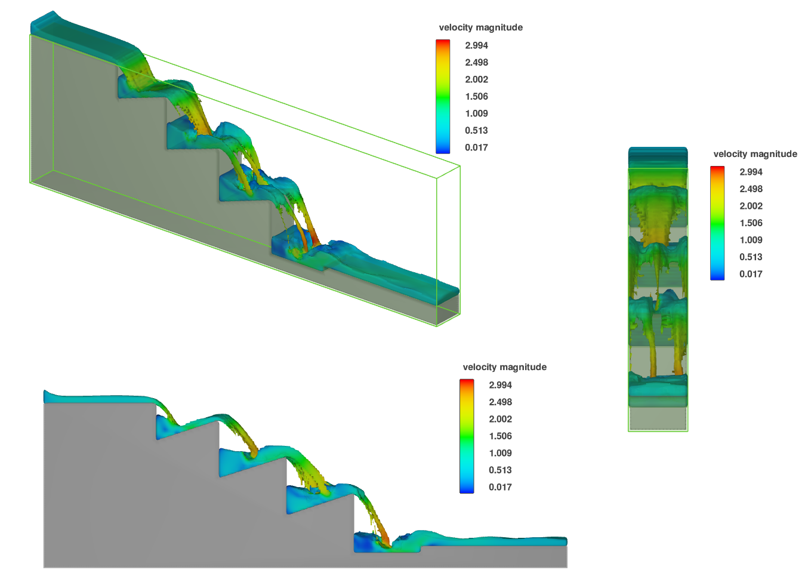
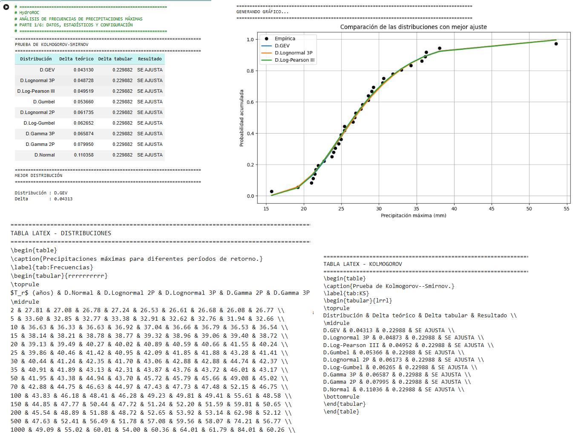
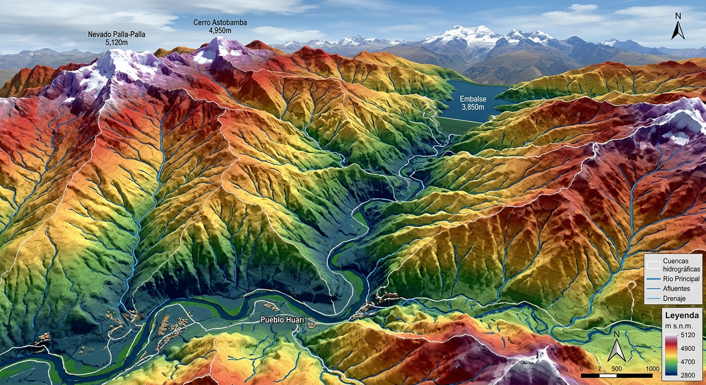
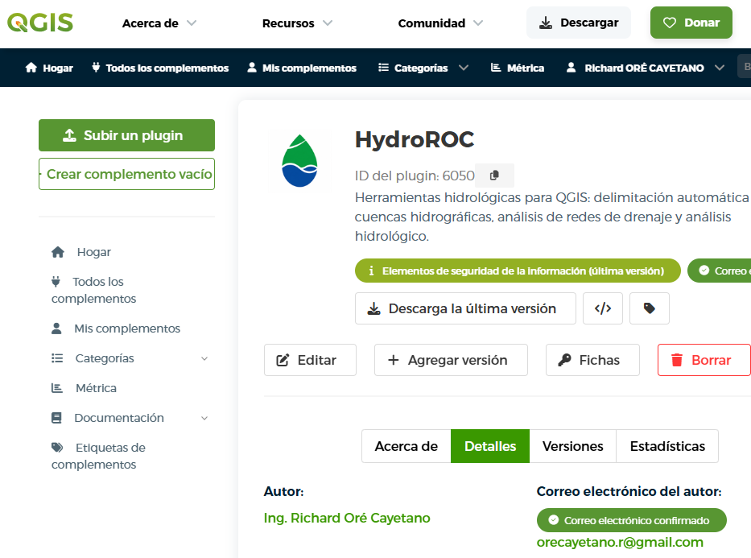

01 · SOFTWARE
HydroROC
Plugin para QGIS orientado al análisis hidrológico y al procesamiento de información espacial para estudios de recursos hídricos.
Desarrollo proyectos, herramientas y conocimiento técnico integrando geologia, hidrología, hidráulica, GIS, programación, saneamiento, geotecnia, hidrogeología y experiencia de campo.





Una combinación de ingeniería, análisis de datos, herramientas digitales y experiencia en proyectos y obras.
Análisis hidrológico, precipitaciones, caudales, cuencas y máximas avenidas.
Canales, ríos, estructuras hidráulicas y modelamiento.
Análisis espacial, modelos digitales de elevación y procesamiento territorial.
Automatización, análisis de datos y desarrollo de herramientas para ingeniería.
Acuíferos, pozos, bombeo y análisis del flujo subterráneo.
Mecánica de suelos, caracterización y problemas geotécnicos.
Sistemas de agua potable, alcantarillado y proyectos de saneamiento.
Expedientes técnicos, concreto y experiencia en ejecución de obras.
Desarrollo de herramientas, publicaciones y soluciones aplicadas a la ingeniería civil, los recursos hídricos y el territorio.
Plugin para QGIS orientado al análisis hidrológico y al procesamiento de información espacial para estudios de recursos hídricos.
Aplicación Android para el procesamiento de mediciones de campo y cálculo de caudales mediante el método de secciones.
Colección de libros y manuales técnicos orientados a la formación y aplicación práctica de la ingeniería hidráulica e hidrológica.
Aplicación de QGIS, HEC-HMS y HEC-RAS para el análisis de cuencas, transformación lluvia–escorrentía, tránsito de avenidas y evaluación de inundaciones.
Desarrollo de proyectos y documentación técnica relacionados con sistemas de agua, alcantarillado, tratamiento de aguas residuales y servicios de saneamiento.
Trabajo con métodos de aforo, estructuras hidráulicas, mediciones de campo y procesamiento de información para la estimación de caudales.
Experiencia vinculada a la ejecución y seguimiento de trabajos de ingeniería, control de campo y aplicación de criterios técnicos en obra.
Experiencia combinando trabajo técnico, desarrollo de proyectos y experiencia directa en campo.
Participación en la elaboración y desarrollo de proyectos de ingeniería y expedientes técnicos, incluyendo proyectos de saneamiento.
Experiencia vinculada a la ejecución de proyectos de ingeniería y al trabajo directo en campo.
Desarrollo de herramientas propias para apoyar procesos de análisis, cálculo y trabajo de ingeniería.
Soy Ingeniero Civil peruano y desarrollo mi trabajo principalmente en el ámbito de los recursos hídricos, la ingeniería y las herramientas digitales aplicadas.
Mi interés está en integrar conocimientos de ingeniería con GIS, programación y herramientas de análisis para resolver problemas reales de proyectos y obras.
También desarrollo material técnico, libros y herramientas propias con la finalidad de compartir conocimientos y facilitar el trabajo de otros profesionales y estudiantes.
Profesión: Ingeniero Civil
Nacionalidad: Peruano
País: Perú
Especialidad: Hidrología · Hidráulica · GIS
Base: Perú
Libros, manuales, ejercicios, herramientas y material técnico desarrollado a partir de la experiencia en ingeniería.
Para consultas, colaboración, proyectos o intercambio de conocimiento.
orecayetano.r@gmail.com